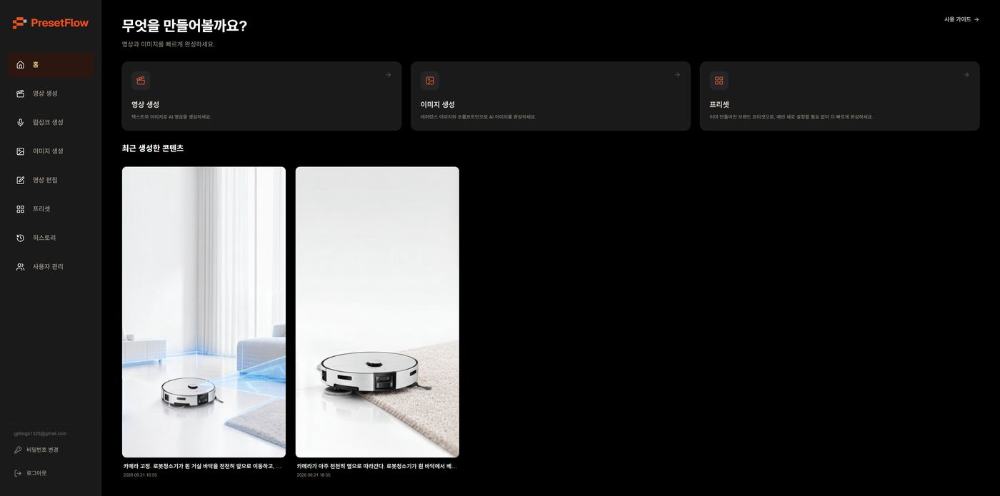
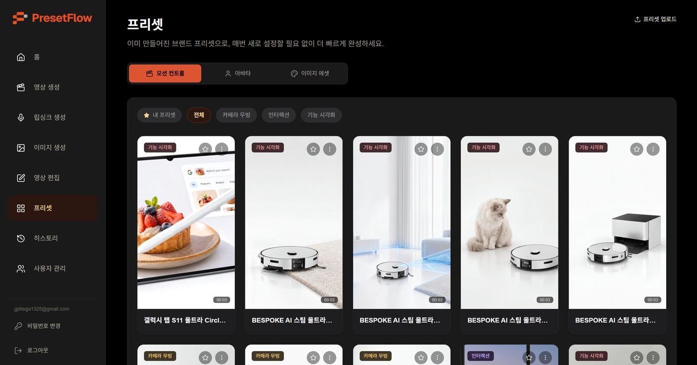
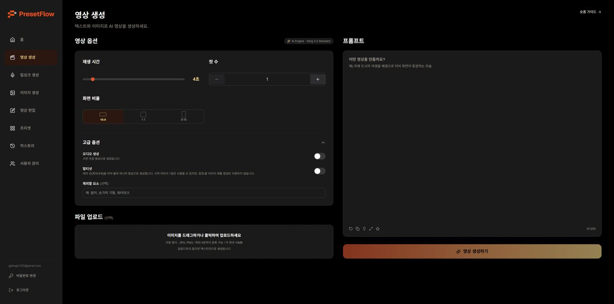
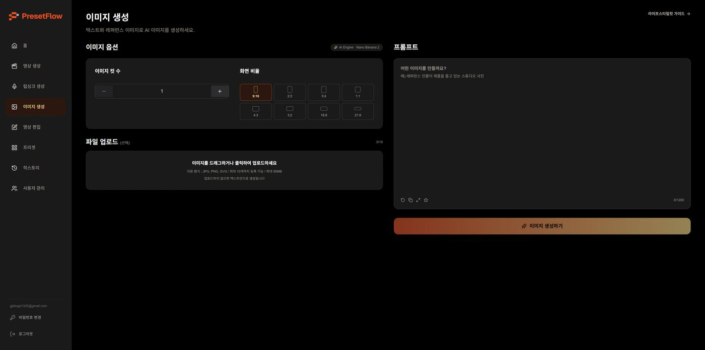
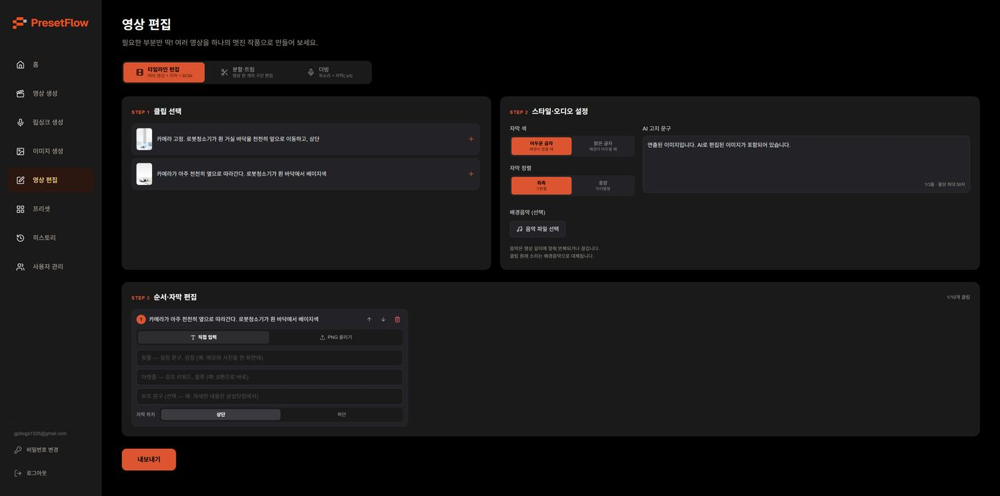
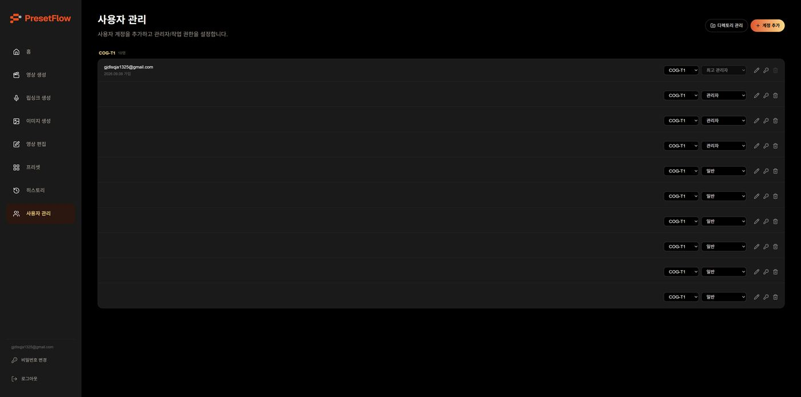

01
사내 AI 콘텐츠 플랫폼 Presetflow 구축
영상 및 이미지를 더 빨리 만들도록 사내 도구를 직접 기획하고 개발했습니다.
- 기간
- 2026.01 – 진행 중
- 역할
- TF 리더 (3인)
- 범위
- 기획 · 개발 · 운영 정책
- 스택
- Vercel · Supabase · R2 · Fal.ai
- 기여도
- 90%
배경 · 문제
AI 활용 사이드 업무를 맡아 숏폼 제작을 효율적으로 진행할 방법을 고민하던 중, 외부 생성형 AI 도구를 건별로 쓸 때 발생하는 비용 · 리소스 문제를 해결하기 위해 3인 TF를 구성해 사내 도구를 직접 만들기로 했습니다.
접근 · 전략
- 권한 체계부터 정의 owner · admin · user 3단계와 그룹 단위 접근 정책을 먼저 문서화
- 운영 리스크를 기능으로 API 사용량 상한 · 자동 차단 · 건별 비용 추적을 요건에 포함
- 프롬프트 없이 쓰는 구조 모드별 프리셋 49종과 즐겨찾기로 옵션만 고르면 결과가 나오게
- 생성부터 편집까지 한 흐름으로 영상 · 이미지 · 립싱크 생성 후 클립 선택 → 스타일 · 오디오 → 순서 · 자막 3단계로 편집하고 AI 고지 문구까지 삽입
- Claude Code로 영상 자동화 Claude Code와 연동해 영상 생성 자동화 시스템 구축
결과
기획 · 설계 · 구현 전 과정 주도 완성 · 프리셋 49종 · 내부 테스트 완료 (시연 가능)
회고
권한과 비용을 먼저 정의한 덕에 사내 배포 논의에서 보안 · 비용 질문에 바로 답할 수 있었습니다. 다만 사용 데이터가 쌓이기 전이라 효과를 수치로 보여줄 지표는 아직 숙제입니다.
라이브 화면





